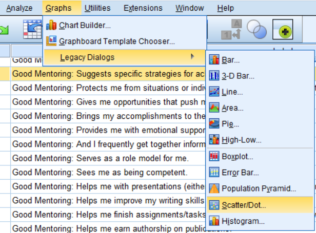

Visualization
Histograms
As we mentioned when we were generating a frequency plot, it can be helpful to generate a histogram to have a visualization of the data distribution of a particular variable while you are trying to fiture out your data:
Scatter Plots
If your dependent variable is continuous, particularly if your independent variable is too, it can be helpful to generate a scatterplot of your data:
